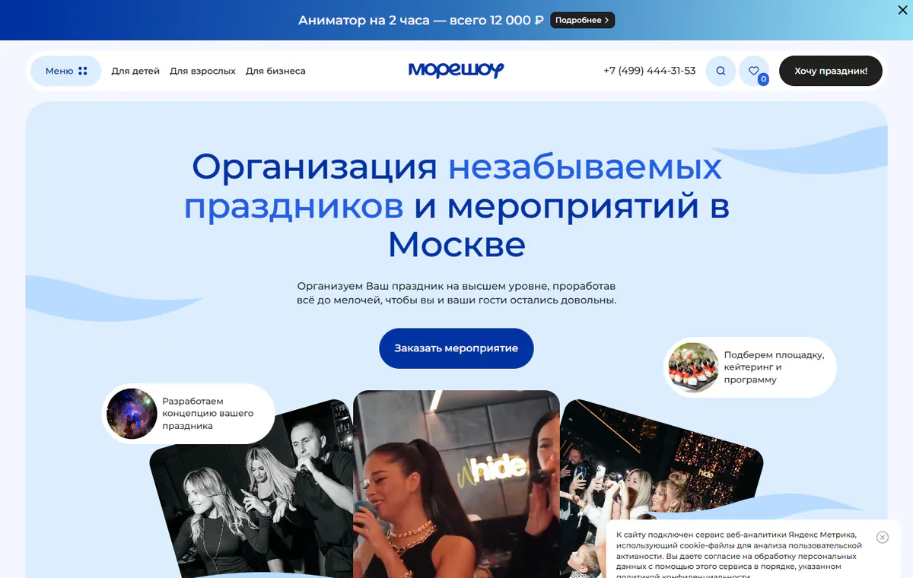

01 · more-show.ruБольшой выбор без паники
Юля, сайт говорит: «У нас много всего — и мы поможем не потеряться»
Подходит семье, взрослому заказчику и компании. Человек быстро узнаёт себя, выбирает нужный раздел и только потом погружается в каталог.
Что удобно
Есть разные входы для разных праздников, поиск, фильтры и возможность отложить понравившиеся варианты.
Что берём
Понятный маршрут и аккуратный каталог, где большой ассортимент не пугает.
Что не повторяем
Много похожих блоков подряд и длинные тексты, которые читают только поисковики.